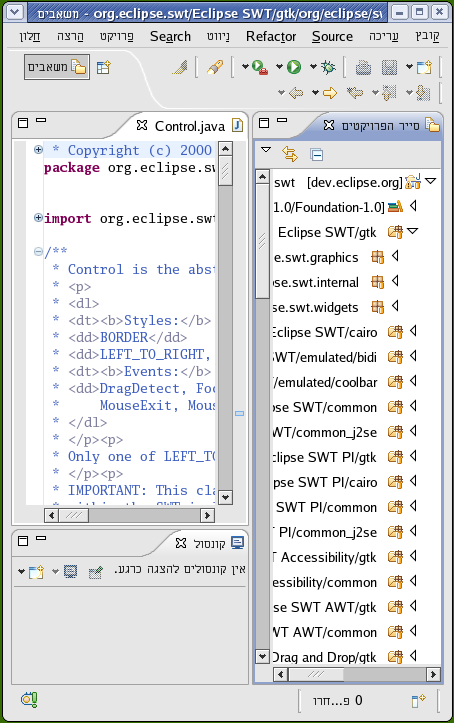


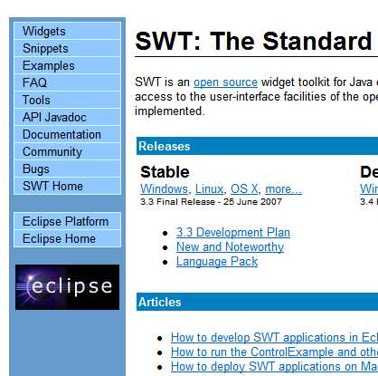
| |
|
| SWT for 64-bit Windows | Windows x86_64/AMD64 has joined the lineup of supported
configurations for which SWT and Eclipse are routinely built. To use it you must be
running on a 64-bit edition of Windows with a 64-bit JRE. (Note that the 32-bit
versions of SWT and Eclipse can still be used on these configurations with a 32-bit JRE).
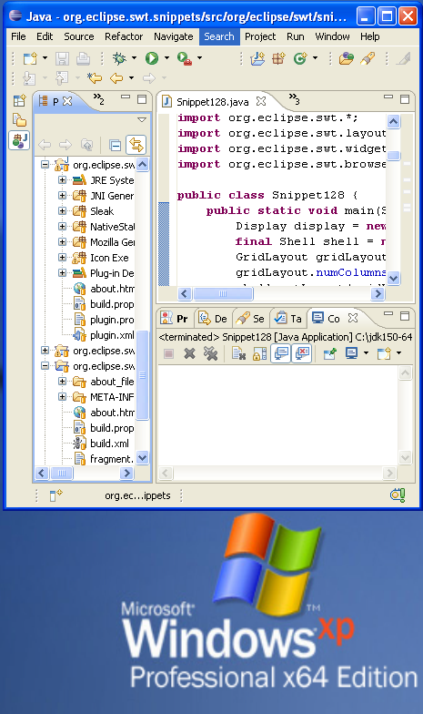 |
| |
|
| |
|
| SWT RTL support for Linux GTK | SWT now provides support for mirroring on Linux
GTK platforms.
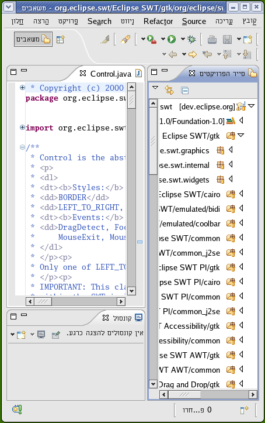 |
| SWT inline input method | StyledText has added support for inline input
method in Win32, GTK, and Carbon.
|
| SWT features in TextLayout and StyledText | TextLayout and StyledText now allow different
strikeout colors, underline colors, and different underline styles.
|
| SWT full screen state | API was added to put a Shell into a full
screen state. Full screen should be used rather than creating an ON_TOP shell the size
of the screen, which may not obscure the task bar or other desktop adornments under
certain operating systems. 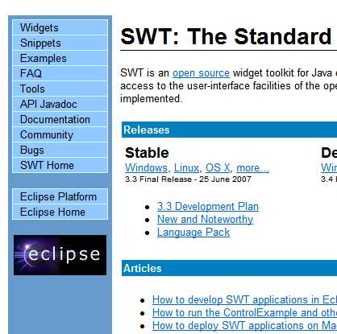 |
| |
|
| SWT on HP-UX IA64 | SWT will now run (in 32-bit mode) on HP-UX Itanium
machines.
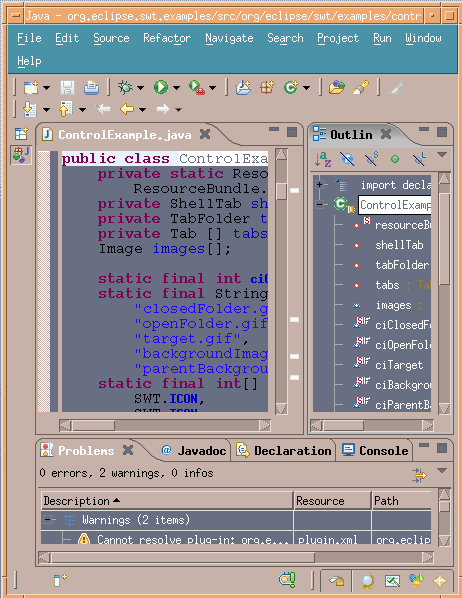 |
| Alpha on shells | There is new SWT API that allows the
setting of an alpha value on a shell. Note: some operating systems do not
support this functionality.
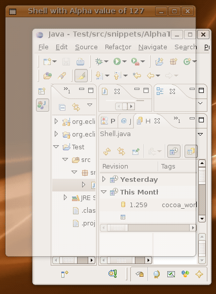 |
| Image transfer support | New API was added to support copy and paste of an image to and from the clipboard. |
| Accessibility for Mac OS X | Eclipse is now accessible on Mac OS X Carbon.
The Mac screen reader, VoiceOver, can be turned on and off with Command+F5.
The snapshot below shows the VoiceOver cursor highlighting a tool item
in Eclipse.
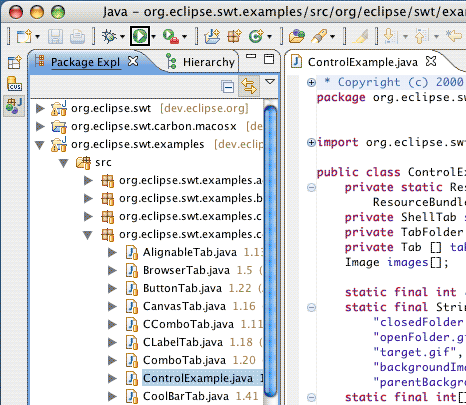 |
| URL transfer support | There is new Drag and Drop API to support the
conversion between text in URL format and a platform-specific representation
of the data.
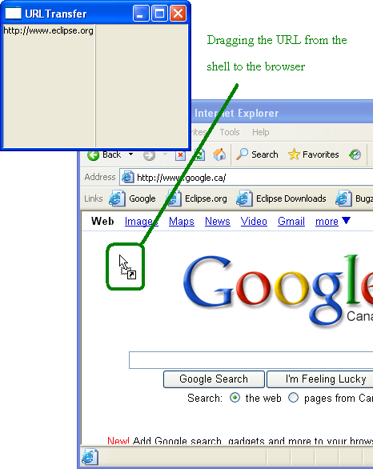 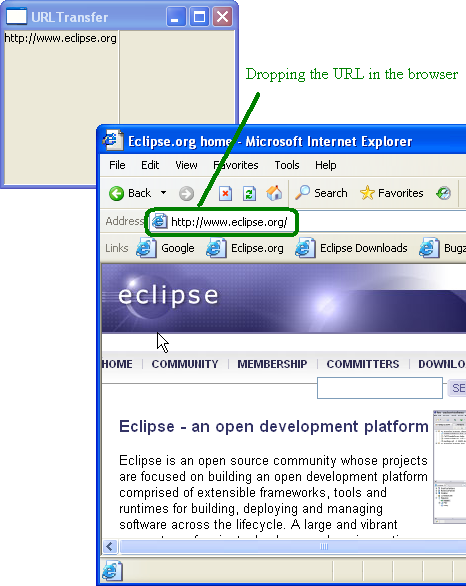 For further details, see Snippet 284. |
| Create a region from a path | There is new API to flatten a graphics path
into line segments. Line segments can be used to create a region, which
is used for non-rectangular shells. This snippet creates
a circular shell from a path.
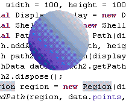 |
| OpenGL support on Solaris | OpenGL support has been added on the Solaris-GTK
and Solaris-Motif platforms.
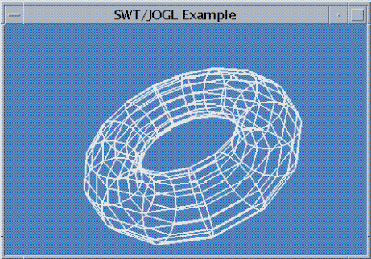 |
| Proxy settings on Mozilla-based Browsers | Mozilla-based Browsers now support access to
the web through a proxy. This can be set by specifying the network.proxy_host and network.proxy_port java
properties at startup.
For more info see How do I set a proxy for the Browser to use? |
| Regions on controls | You can now set a Region into a Control, which
allows for the creation of non-rectangular controls. This example snippet
created the snapshot shown below.
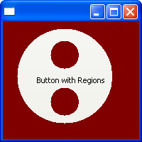 |
| Tristate buttons | API was added to allow for tristate check buttons
similar to the check buttons in a table or tree. This example snippet
created the snapshot shown below.
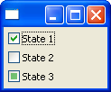 |
| Draw control to GC | API was added to allow the drawing of any Control
to a GC. For more info, check out Snippet
292.
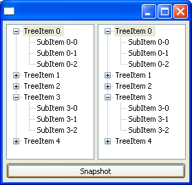 |
| Browser now uses XULRunner 1.9 interfaces | The Browser widget has been updated to work
with the upcoming XULRunner 1.9 release (which is compatible with older
XULRunner versions). This affects all Browser instances on Linux, as well
as Windows and OSX Browser instances created with style SWT.MOZILLA.
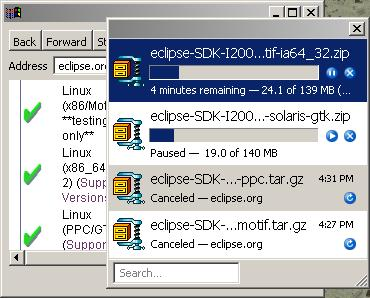 |
| Drag and drop improvements on Mac | When inserting an item into a tree, an indicator
is now displayed to show where the item will end up.
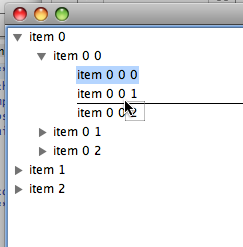 |
| SWT for Windows 64-bit Itanium Edition | Windows IA64 has joined the lineup of supported configurations for which SWT is routinely built. To use it you must be running on Windows 64-bit Itanium Edition with a 64-bit JRE. |
| Shear transform | SWT has new API that allows for shearing of images. For more info, check out SWT Snippet 298. |
| File overwrite prompt | The SWT FileDialog now optionally prompts the
user to confirm when a file will be overwritten. This allows the user to
stay within the dialog when choosing a file to save.
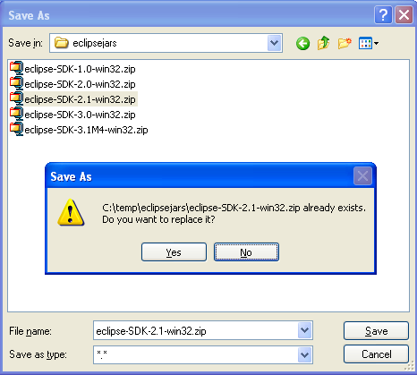 |
| RowLayout center alignment | New API was added to SWT RowLayout to allow
for the centering of controls. For more info, check out SWT
Snippet 299.
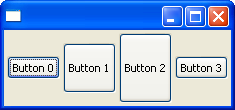 |
| Cocoa improvements | Work on the Mac Cocoa port of SWT is still in
the early stages, but some important improvements have been made:
Thanks to the community for contributing patches, bug reports and testing. 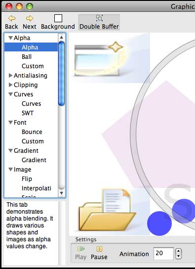 |
| Progress bar (Vista) | The SWT ProgressBar control now supports the
native Windows Vista styles.
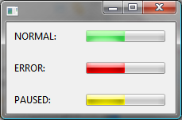 |
| No scrollbars | The style bit NO_SCROLL was added on all platforms
to prevent scrollbars in tables and trees. This is useful if you know that
a certain table or tree is a fixed size and will never contain enough elements
to warrant scrollbars. For more info, check out SWT
snippet 301.
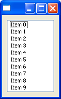 |